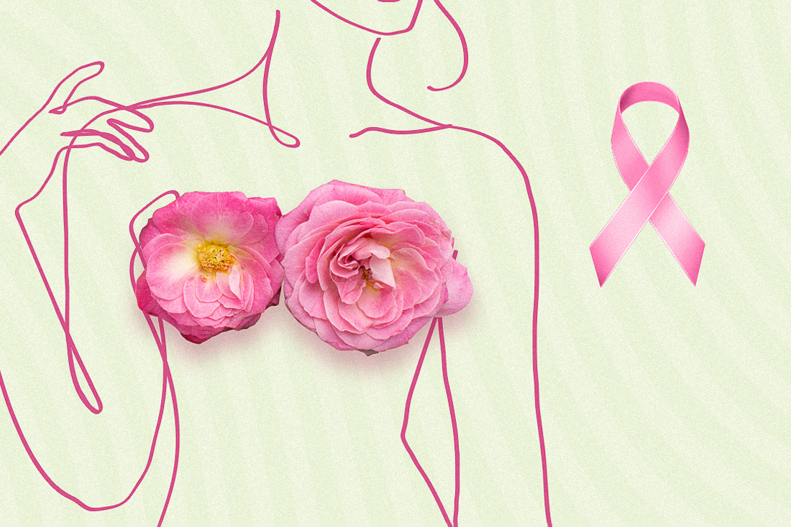

OUTUBRO ROSA
Informação que transforma, cuidado que salva.
Um movimento de conscientização sobre o câncer de mama, que incentiva o cuidado com a saúde e a importância do diagnóstico precoce.
Saiba mais
O que é o Outubro Rosa?
O Outubro Rosa é uma campanha internacional realizada todos os anos com o objetivo de conscientizar a população sobre o câncer de mama. Durante esse período, diversas instituições promovem ações para compartilhar informações, incentivar o cuidado com a saúde e destacar a importância do diagnóstico precoce.
Mais do que uma campanha, o movimento representa união, informação e apoio a todas as pessoas que enfrentam essa realidade.
O cuidado começa com a informação.
Como você pode participar?
Compartilhe
Divulgue informações confiáveis e ajude a conscientizar outras pessoas.
Participe
Esteja presente em eventos e ações que apoiam o Outubro Rosa.
Incentive
Converse sobre saúde e incentive o acompanhamento profissional.